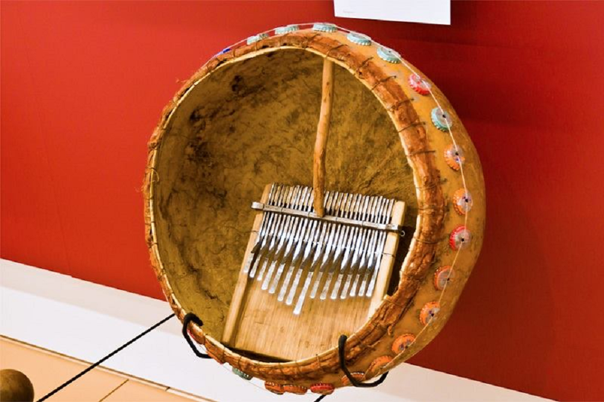

Njari mbira
Apunte 041
Inicio > Blog Bitácora de un músico > Apunte 041
Un lamelófono de Zimbabue
El njari es uno de los diversos tipos de mbira que se tocan tradicionalmente en Zimbabue. Consta de una serie de lengüetas metálicas montadas sobre una tabla de resonancia de madera, distribuidas en grupos que permiten al intérprete producir melodías, patrones de bajo y figuras musicales entrelazadas con los pulgares y, en algunas configuraciones, con los dedos índices.
Su sonido puede oírse sin necesidad de ningún elemento adicional. Sin embargo, el instrumento suele tocarse en el interior de un gran resonador de calabaza conocido como deze, que modifica considerablemente su comportamiento acústico.
Esta disposición constituye un ejemplo de un principio ampliamente utilizado en la construcción de instrumentos musicales: un elemento vibrante puede producir un sonido de altura definida y, al mismo tiempo, irradiar relativamente poco sonido, mientras que una estructura resonante puede hacer que esa vibración resulte más audible.
En el njari, las lengüetas metálicas, la tabla de madera, la calabaza y, en ocasiones, ciertos elementos que producen vibraciones sonoras adicionales aportan distintos componentes al sonido final.
El njari y su construcción
El njari posee una historia distinta de la del más conocido mbira dzavadzimu, aunque ambos forman parte de las tradiciones de lamelófonos de Zimbabue.
En 1932, el etnomusicólogo Hugh Tracey recogió testimonios orales que vinculaban la introducción del njari en el actual territorio de Zimbabue con la llegada de músicos procedentes del valle del Zambeze, en lo que hoy es Mozambique. Según la tradición que documentó, el instrumento llegó a la región de Buhera a través del pueblo njanja y posteriormente se difundió por los territorios vecinos. Tracey señaló asimismo que los herreros locales fabricaban instrumentos que se distribuían por toda la región.
A mediados del siglo XX, el njari se había convertido en una presencia habitual en la vida musical de Zimbabue. Las grabaciones y emisiones radiofónicas de las décadas de 1950 y 1960 dan testimonio de su popularidad.
Su construcción presenta diferencias considerables entre unos ejemplares y otros. Entre los instrumentos conservados en la colección Tracey figuran un njari de veintinueve lengüetas construido por Simon Mashoko, un ejemplar de treinta y tres lengüetas procedente del distrito de Mount Darwin y otro más pequeño, de diecinueve lengüetas, fabricado por Gwenzi Gwasera.
La disposición de las lengüetas reviste especial importancia. Los teclados del njari suelen distribuir las notas en varios grupos, con alturas que ascienden desde el centro hacia los extremos. Mediante movimientos coordinados de los dedos es posible acceder a distintos registros, y algunas configuraciones sitúan las lengüetas cuyas notas están separadas por una octava lo suficientemente cerca unas de otras como para permitir su articulación sucesiva en un solo gesto. Estas disposiciones permiten al intérprete desarrollar varios patrones musicales que interactúan entre sí sin necesidad de recurrir a partes instrumentales independientes.
La afinación no está estandarizada. Las preferencias locales y las prácticas particulares de cada músico dan lugar a variaciones en los intervalos y en las relaciones entre las alturas de las notas.
El resonador añade una dimensión más a este instrumento ya de por sí complejo.
El deze: hacer audible un instrumento de escasa sonoridad
Las lengüetas metálicas de un lamelófono son cuerpos vibrantes de dimensiones relativamente reducidas. Al pulsarlas, generan sonido directamente, pero su tamaño limita la eficacia con la que transmiten la energía vibratoria al aire circundante.
La tabla de resonancia de madera participa en este proceso. Las vibraciones llegan a ella a través del sistema de sujeción que mantiene las lengüetas bajo presión, y su mayor superficie contribuye a la radiación sonora.
El deze modifica esta disposición. Fabricado tradicionalmente a partir de una calabaza seca (Lagenaria siceraria), el resonador consiste en una estructura de grandes dimensiones, abierta y con forma de cuenco. El instrumento se coloca en su interior y suele fijarse mediante una cuña de madera. La calabaza puede retirarse, de modo que el njari y su resonador siguen siendo componentes físicamente independientes.
Una vez ensamblados, funcionan como un sistema acústico acoplado. Las vibraciones del instrumento interactúan con el aire contenido en la calabaza y, en mayor o menor medida, con las paredes de esta. La cavidad modifica la forma en que el sonido se irradia al espacio circundante. El resultado suele ser una mayor audibilidad y un sonido más pleno, aunque no necesariamente un aumento uniforme de la intensidad de todas las frecuencias.
La calabaza posee sus propias características de resonancia. Algunas frecuencias pueden verse reforzadas con mayor eficacia que otras, lo que modifica el equilibrio entre las frecuencias fundamentales de las notas y sus parciales superiores.
Esto resulta especialmente relevante en el caso de los lamelófonos, pues sus lengüetas no se comportan acústicamente como cuerdas vibrantes ideales. Las mediciones realizadas por Lorie McNeil y Sorin Mitran, publicadas en 2008, permitieron identificar parciales inarmónicos destacados en el sonido de un mbira africano. Las frecuencias exactas dependen de las dimensiones y las propiedades mecánicas de las lengüetas.
Un resonador puede influir en la prominencia relativa de estos componentes espectrales, aunque los resultados obtenidos con un determinado mbira no pueden extrapolarse automáticamente a todos los njari.
Las características físicas de la calabaza también son importantes. Su diámetro, su profundidad y el grosor y la rigidez de sus paredes influyen en su respuesta acústica. La posición del instrumento dentro de la cavidad y la firmeza de su contacto con el resonador introducen otras variables.
La selección y la preparación de las calabazas forman parte, por tanto, del trabajo del constructor de instrumentos. Los músicos aprecian las calabazas de gran tamaño que reúnen las características adecuadas, aunque sus paredes pueden ser frágiles. En ocasiones se reparan los resonadores dañados, mientras que los sustitutos actuales fabricados con fibra de vidrio ofrecen una mayor durabilidad.
El deze ilustra una forma de amplificación acústica que se consigue mediante la disposición física de los componentes vibrantes. No genera energía adicional, como lo hace un amplificador electrónico, sino que modifica la manera en que la energía vibratoria del instrumento se transforma en sonido audible.
La producción deliberada de zumbidos
La calabaza cumple otra función cuando se colocan en torno a su abertura objetos sujetos de manera holgada, especialmente chapas de botella, conchas o pequeñas piezas metálicas. Al tocar el njari, las vibraciones pueden poner estos objetos en movimiento, haciendo que entrechoquen o golpeen el resonador. El resultado es una combinación de sonidos de altura definida y zumbidos irregulares.
Este efecto debe distinguirse de la propia acción resonante de la calabaza. El resonador modifica la radiación del sonido producido por las lengüetas, mientras que los elementos que entrechocan introducen mecanismos adicionales de producción sonora. La relación entre ambos fenómenos reviste, sin embargo, una considerable importancia musical.
En su estudio de 1994, The Fusion and Layering of Noise and Tone, Cornelia Fales y Stephen McAdams investigaron cómo perciben los oyentes las combinaciones de sonidos periódicos y ruido en los instrumentos musicales africanos. Dependiendo de sus características acústicas, estos componentes pueden percibirse como sonidos independientes o como aspectos de un único timbre complejo.
Esta distinción ayuda a comprender la importancia musical de los elementos productores de zumbidos. Su función no consiste simplemente en acompañar las notas: pueden modificar la cualidad sonora que se percibe del propio instrumento. El zumbido es intencionado, y tanto su intensidad como su carácter pueden modificarse mediante la selección y la disposición de los elementos que lo producen.
En las tradiciones musicales shona, estas características tímbricas también pueden tener un significado ceremonial. Sin embargo, tales asociaciones varían en función del instrumento, el repertorio y el contexto de interpretación. Las funciones religiosas documentadas para el mbira dzavadzimu no deben atribuirse automáticamente al njari.
Simon Mashoko y la vida musical del njari
Uno de los intérpretes de njari mejor documentados fue Simon Mashoko, músico y constructor de instrumentos karanga cuya trayectoria ilustra la diversidad de contextos en los que podía utilizarse el instrumento.
Mashoko interpretaba canciones tradicionales shave en reuniones sociales y bailes, pero era también diácono católico e incorporaba la música del mbira a las actividades religiosas cristianas. Su vida musical quedó documentada en la película de 1977 Njari: Karanga Songs in Christian Ceremonies, dirigida por Andrew Tracey y producida por Gei Zantzinger.
La película resulta especialmente valiosa porque sitúa el instrumento en el contexto de las actividades cotidianas de un músico concreto, en lugar de presentarlo simplemente como un ejemplo de instrumento musical africano.
Las grabaciones de Mashoko, entre ellas su interpretación de Mbiriviri, conservan asimismo ejemplos de un repertorio en el que los patrones repetitivos, los cambios de registro y las distintas líneas melódicas generan texturas instrumentales complejas.
El resonador contribuye a la audibilidad y al timbre de esta música, pero su organización musical tiene su origen en la técnica del intérprete y en la disposición de las lengüetas. El instrumento y el resonador desempeñan, por tanto, funciones complementarias y no intercambiables.
Un instrumento y su entorno acústico
El njari constituye un interesante ejemplo organológico porque su principal estructura productora de sonido puede separarse del dispositivo que mejora su proyección sonora.
Consideradas de forma independiente, la tabla de madera y sus lengüetas metálicas vibrantes constituyen un lamelófono de tabla. La incorporación del deze da lugar a un conjunto acústico de mayores dimensiones, mientras que los elementos que entrechocan introducen sonidos idiofónicos adicionales.
El sonido del njari surge de la relación entre los gestos del intérprete, las lengüetas metálicas, la tabla que las sostiene, la cavidad resonante y las fuentes adicionales de zumbido.
El deze no es un accesorio decorativo ni un simple recipiente. Es un componente acústico que permite a un lamelófono de sonoridad relativamente reducida desenvolverse con mayor eficacia en reuniones en las que la música debe oírse junto con el canto, el baile y otros instrumentos.
Su construcción demuestra cómo las modificaciones del entorno resonante de un instrumento pueden ampliar considerablemente sus posibilidades musicales sin alterar su mecanismo primario de producción sonora.
Lecturas
- Berliner, Paul F. (1978). The Soul of Mbira: Music and Traditions of the Shona People of Zimbabwe. Berkeley: University of California Press.
- Fales, Cornelia, and Stephen McAdams. (1994). The Fusion and Layering of Noise and Tone: Implications for Timbre in African Instruments. Leonardo Music Journal, 4, 69–77.
- Grinnell College Musical Instrument Collection. (n.d.). Njari.
- McNeil, L. E., and Sorin Mitran. (2008). Vibrational Frequencies and Tuning of the African Mbira. Journal of the Acoustical Society of America, 123(2), 1169–1178.
- Sympathetic Resonances. (n.d.). Njari.
- Tinotenda. (n.d.). Mbira Resonators.
- Tracey, Andrew. (1972). The Original African Mbira? African Music, 5(2), 85–104.
- Tracey, Andrew (dir.). (1977). Njari: Karanga Songs in Christian Ceremonies. Film, produced by Gei Zantzinger. 26 min.
- Tracey, Hugh. (1969). The Mbira Class of African Instruments in Rhodesia (1932). African Music, 4(3), 78–95.
- Turino, Thomas. (2000). Nationalists, Cosmopolitans, and Popular Music in Zimbabwe. Chicago: University of Chicago Press.
Video. Del usuario de YouTube Matsuhira Yuji.